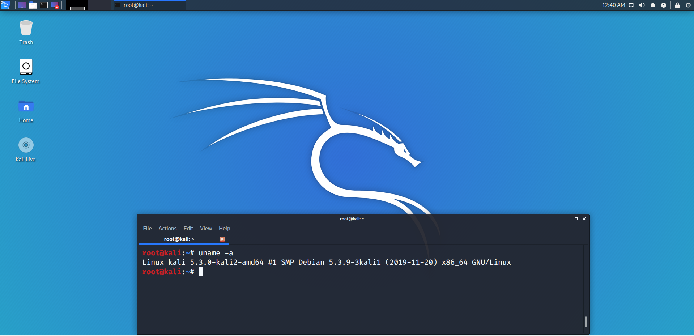
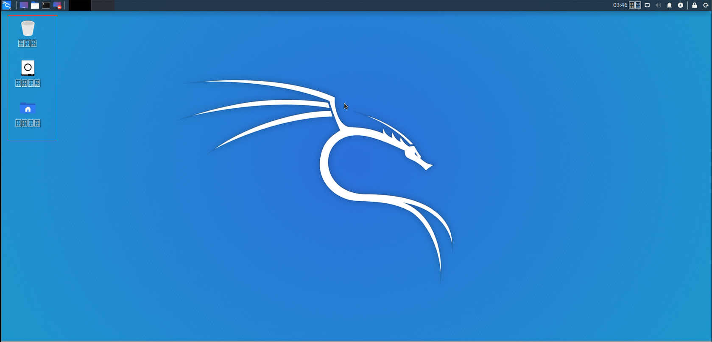
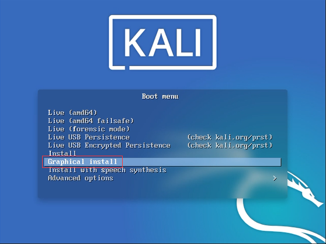
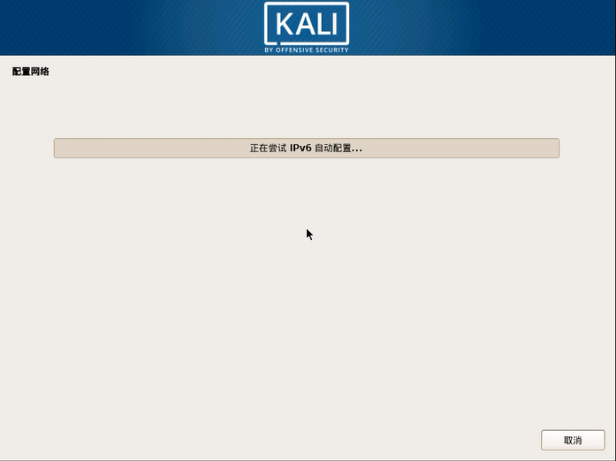

Kali Linux 安装教程
前言：Kali Linux系统作为白帽、黑帽最受欢迎的渗透测试系统，你如果是一个安全渗透专家或者网络安全管理员，必须要学会慎重并且合理地利用这个系统，因为对目标系统造成的实质伤害会带来法律的约束以及制裁!
先上一个安装好了的截图，这里我安装的是Kali 5.3.0/x64位的系统。

Kali Linux下载地址（百度网盘）
链接：https://pan.baidu.com/s/1cYPzS8sjpX0-pAP0UKbppg
提取码：o670
那么下面的话我会以5.3.0版本的安装过程进行介绍，分别是命令行/图形化的安装方法。
- 1、虚拟机的配置
- 2、命令行安装
- 3、图形化安装
一、虚拟机配置（本人使用的是VMware Workstation Pro 15.5.1版本）
1、新建虚拟机。
2、稍后再选择ISO镜像文件。
3、选择Linux操作系统，选择Debian 6 64位（因为KaliLinux是BackTrack Linux完全遵循Debian开发标准的完整重建，全新的目录框架、复查并打包所有工具、还为VCS建立了Git 树）。
4、虚拟机名称随意，位置是虚拟机的存放目录。
5、磁盘大小推荐为30G，同时选择将磁盘拆分为多个文件。
6、单击自定义硬件。
7、推荐内存给2G，按照自己电脑的实际配置来选择。
8、移除打印机（因为用不到）。
9、单击完成，完成创建虚拟机。
10、虚拟机创建完成后再开始导入镜像文件，选择虚拟机配置。
11、选择CD/DVD(IDE) 设置使用ISO映像文件。
12、选择KaliLinux.iso镜像文件。
13、点击确定完成挂载镜像。
14、到此虚拟机的安装就完成了，点击开启此虚拟机就可以开始使用了。
二、命令行安装（英文安装和中文安装流程一样，请自己对照中英翻译）
1、选择命令行安装。
2、选择语言。

3、选择区域。
4、选择输入键盘映射。
5、配置主机名。
6、配置域名（没有可以不写）

7、设置Root密码。
8、再次输入Root密码。

9、配置磁盘，选择使用整个磁盘。
10、选择要安装的磁盘。
11、选择分区配置，如果不知道如何选择选第一个。
12、系统会自动划分分区，确定将分区改动写入磁盘。
13、确定写入磁盘分区同时格式化磁盘。
14、是否配置YUM源，选是。
15、填写HTTP服务器作为YUM源，如果没有可以不填。（如果使用网络YUM源安装必须有网）
16、将系统引导写入到第一个分区上。
17、选择刚才安装的磁盘。
18、重启系统。

19、重启系统后进入到Kali启动界面。

20、进入系统后中文会出现字符乱码的情况！！！ 推荐装英文版。
三、图形化安装（英文安装和中文安装流程一样，请自己对照中英翻译）
1、选择带图形化的安装

2、选择语言。
3、选择区域。
4、选择键盘配置。
5、开始寻找安装介质。



6、设置主机名。
7、设置域名（如果没有可以为空）。
8、设置root密码，重复密码。
9、配置时钟。
10、磁盘分区，如果是新安装，建议使用整个分区。
11、选择磁盘。
12、选择分区配置，如果不知道如何选择选第一个。
13、将分区分配方案写入磁盘。
14、确定写入。
15、安装系统。
16、配置YUM源。
17、填写HTTP服务器作为YUM源，如果没有可以不填。（如果使用网络YUM源安装必须有网）
18、将主引导记录写到磁盘上。
19、选择磁盘写入。
20、进入系统后中文会出现字符乱码的情况！！！ 推荐装英文版。